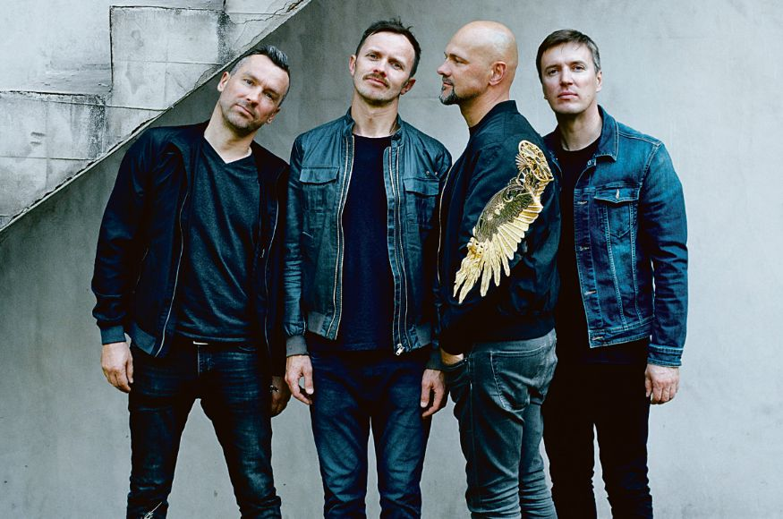
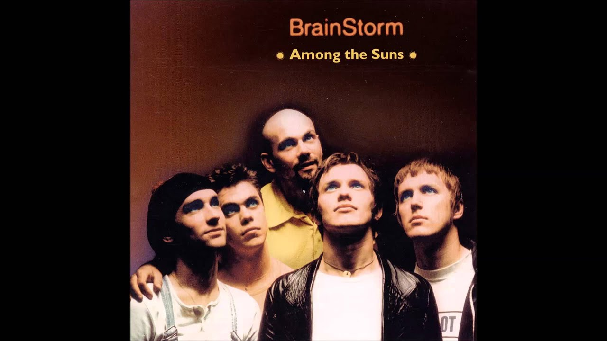
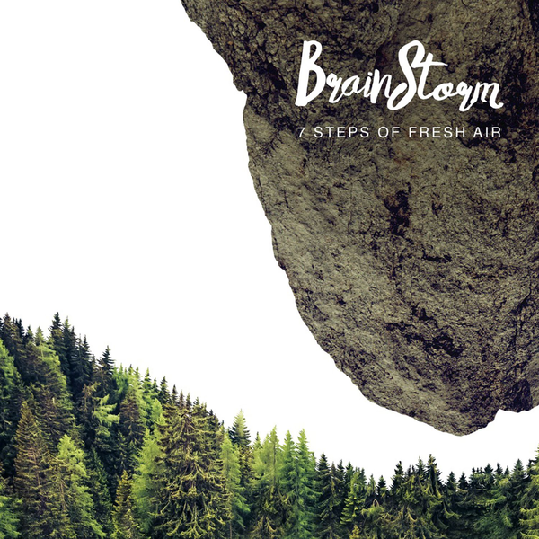
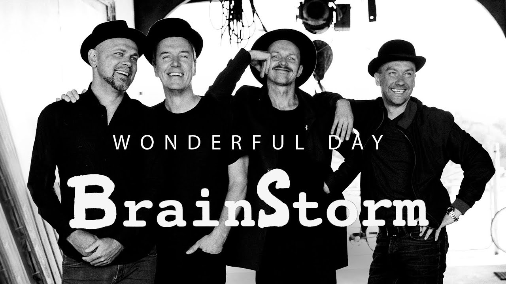
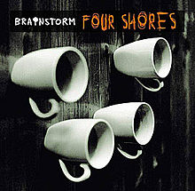

Brainstorm (Latvian: Prāta Vētra) is a Latvian pop/rock band. The band became popular internationally in 2000, when they finished third in the Eurovision Song Contest 2000 with the song "My Star"
The band was formed in the summer of 1989 in Jelgava, Latvia by four former classmates – Renārs Kaupers, Jānis Jubalts, Gundars Mauševics and Kaspars Roga. Soon after, their classmate Māris Mihelsons also joined the band.
In September 1992 Brainstorm released their first single "Jo tu nāc" (Because You Come) and finished 9th in the Latvian popular music contest, the "Michrophones" questionnaire. After this came their first album, Vairāk nekā skaļi (More than Loud) 1993. The main single from that album is "Ziema" (Winter), which has also a video.
Song albums of group




CD bildes
Group "Brainstorm" has released 13 albums.
- "More than Loud" (1993)
- "Veronika" (1995)
- "Everything's the Way You Want It" (1997)
- "Among the Suns" (1999)
- "Online" (2001)
- "A Day Before Tomorrow" (2003)
- "Four Shores" (2006)
- "Tur kaut kam ir jābūt" (2008)
Enjoy listening! :)
- "Years and Seconds" (20100
- "Another Still Life" (2012)
- "7 Steps of fresh air" (2015)
Enjoy listening! :)
- "Wonderful day" (2018)
- "About the boy who played the tin drum" (2018)
AWARDS
Group "Brainstorm" is very award-winning group. They have received many awards not only in hometown Latvia, but also in abroad.
- "Grand Prix prize at the Karlshamn music festival in Sweden" for single "Under my wing"
- Third place in "Eurovision Song Contest" with song "My Star"
- "MTV Europe Music award for Best Baltic Act" in 2006
- 3 awards at the 2012 "Annual Latvian Music Recording Awards"
- Song “Ziemu apēst” was awarded as the most valuable song of 2015 at "Latvian Radio 2" annual award ceremony “Muzikālā Banka”
- "Golden Microphone” for live concert “7 Steps of Fresh Air”Latvian Music Record Awards ceremony
{kind=link}